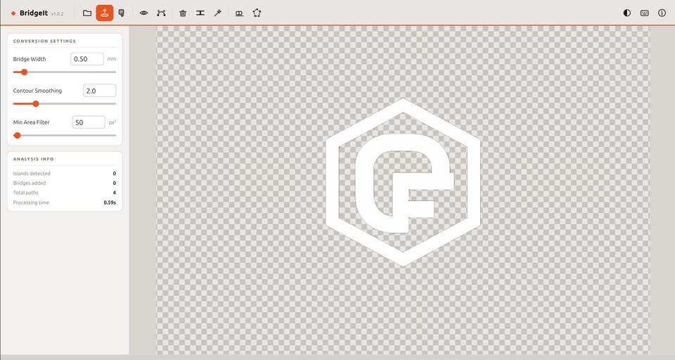
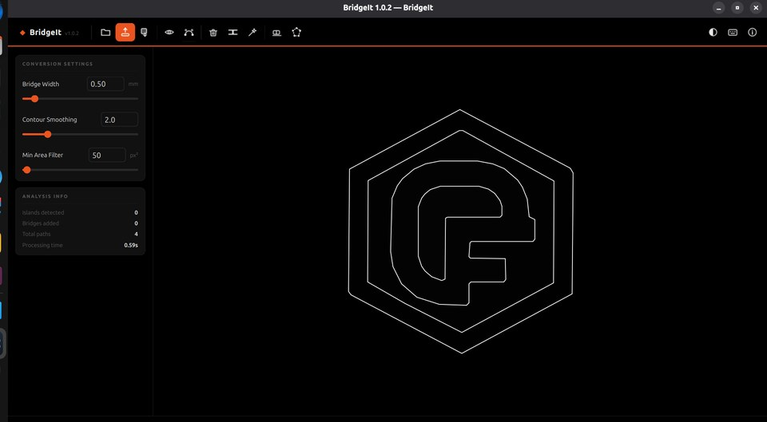
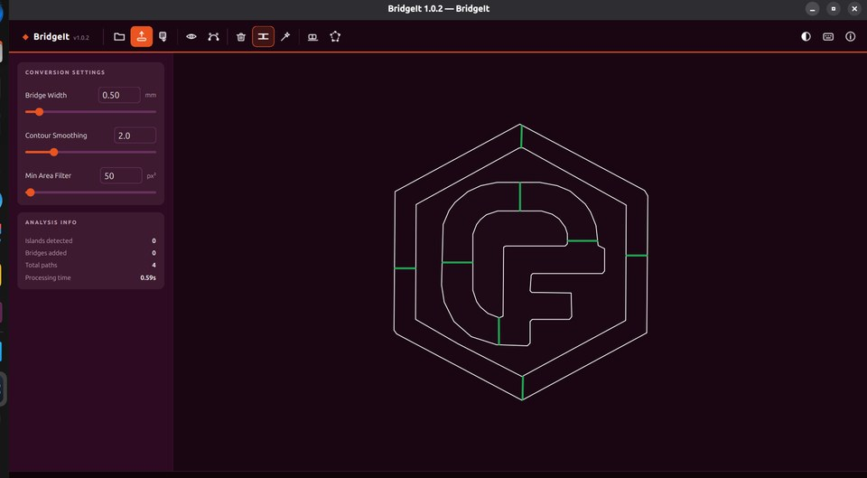
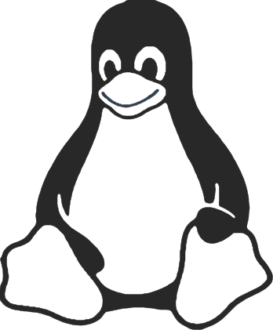

Image to laser-ready SVG
with auto bridge generation
BridgeIt removes backgrounds, traces clean vector outlines, detects floating islands, and automatically adds bridge tabs so your laser cut design stays in one piece.
Free · v1.0.4 · Windows, macOS & Linux · Download. Extract. Done.
macOS: right-click → Open on first launch (unsigned build)
See it in action
Drop in any image — background removed, paths traced, bridges placed in seconds.



Everything you need
AI Background Removal
Removes backgrounds automatically with a single click. Manual erase and lasso tools for tricky edges.
Smooth Vector Tracing
Traces your design into clean, smooth cut paths ready to drop straight into your laser software.
Auto Bridge Generation
Detects floating islands and suggests bridge tabs automatically. Review and confirm before exporting.
Image SVG Export
Export a filled, colored SVG matching the original artwork, perfect for vinyl cutting or print.
Cut-Path SVG Export
Stroke-only paths ready for LightBurn, RDWorks, or any laser cutter software.
Dark, Light & OLED Themes
Three built-in themes. Automatically matches your OS dark/light mode preference.
Real output, straight from BridgeIt
This SVG was generated in seconds from a photo of Tux — background removed, contours traced, ready to cut.

Exported SVG · single path · fabrication-ready
How it works
Open an image
Drop in any PNG, JPG, or SVG. BridgeIt shows the original immediately while processing in the background.
Background is removed automatically
The background is removed automatically. Use the Erase or Lasso tools to clean up any remnants.
Review bridges
BridgeIt highlights floating islands and suggests bridge placements. Delete unwanted ones, add your own, then confirm.
Export and cut
Export the cut-path SVG straight into your laser cutter software. Done.
Common questions
What is a floating island in laser cutting?
When you cut a shape that has a fully enclosed interior piece (like the counter of a letter O, or a logo with a hole in it), that interior piece is called a floating island. It has no connection to the surrounding material, so it falls away when cut. BridgeIt detects these automatically and adds thin bridge tabs that keep the island attached until you snap it free by hand.
What is a bridge tab in laser cutting?
A bridge tab (also called a micro-tab or bridge) is a small uncut section of material that connects a floating island to its surrounding piece. BridgeIt adds these automatically to your SVG cut paths so your design stays in one piece after cutting. You snap them off cleanly with a craft knife or your fingers.
Does BridgeIt work with LightBurn?
Yes. BridgeIt exports a standard SVG cut-path file that imports directly into LightBurn, RDWorks, LaserGRBL, and any other laser cutter software that accepts SVG files.
Can I use my own image or logo?
Yes, any PNG, JPG, or SVG. BridgeIt removes the background automatically, then traces the outlines as smooth vector paths. Works well with logos, clipart, photographs, and hand-drawn designs.
Is BridgeIt really free?
Yes, completely free with no feature limits, no watermarks, and no account required. If it saves you time, you can support development with a small donation, but there's no obligation.
Does it work on Mac and Windows?
Yes — Windows, macOS (Apple Silicon M1 and later), and Linux are all available. Download the right version from the links above. On macOS, right-click the app and choose Open the first time to bypass the unsigned app warning.
What are the system requirements?
Windows: Windows 10 or later, 64-bit. macOS: Apple Silicon (M1 or later). Linux: Ubuntu 20.04+, Debian 11+, Fedora 36+, or any modern 64-bit distribution. No additional software required.
Why is the download ~500 MB?
BridgeIt bundles everything it needs to run — the background removal model, all libraries, and the runtime — so there is nothing else to install. You download once and it works immediately, with no Python or dependencies required.
Free · v1.0.4 · Windows, macOS & Linux · Download. Extract. Done.
BridgeIt is free, forever.
If it's saved you time on a project, a small donation goes a long way toward keeping it maintained and improving it.
Support BridgeIt on Ko-fiGot feedback?
Found a bug, have a feature request, or just want to share how you're using BridgeIt? Open an issue on GitHub. It takes 30 seconds.
Leave Feedback on GitHub